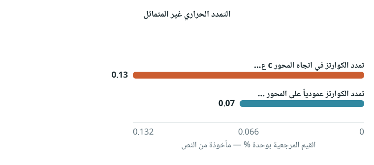

التمدد الحراري غير المتماثل
Anisotropic thermal expansion
التمدد الحراري غير المتماثل هو تمدد يختلف مقداره بحسب الاتجاه في البلورة أو المادة الليفية، فيوصف بمعاملات تمدد متعددة لا بمعامل واحد. يُفسّر تشقق البلورات والزجاج المقوى وتصميم المواد المركبة التي تُضبط أليافها لتقليل التمدد.
في المواد المتماثلة كالمعادن متعددة البلورات، يتمدد الجسم بالتساوي في كل الاتجاهات ويُوصف بمعامل واحد α. أما في البلورات الأحادية والمواد الليفية، فإن الروابط تختلف قوتها بحسب الاتجاه، فيختلف التمدد: قد يتمدد الجسم كثيراً في اتجاه وضعيفاً في آخر. ويُوصف ذلك بموتر تمدد له ثلاثة معاملات رئيسية α₁ وα₂ وα₃. مثال: بلورة كوارتز تتمدد بمقدار 13.2×10⁻⁶ K⁻¹ في اتجاه المحور c و7.1×10⁻⁶ K⁻¹ عمودياً عليه، فلو سخّنت 100 K لتمددت 0.132% في اتجاه و0.071% في الآخر.
كيف تعمل الظاهرة؟
التمدد الحراري ناتج عن زيادة الاهتزاز الذري حول مواضع التوازن. ولمّا كان منحنى طاقة الرابطة غير متماثل — أشدّ انحداراً عند التقارب منه عند التباعد — فإن متوسط المسافة بين الذرات يزداد مع الحرارة. وفي البلورة التي تختلف فيها الروابط بحسب الاتجاه، يكون هذا الازدياد أكبر في الاتجاهات ذات الروابط الأضعف. ولهذا تتمدد البلورة بمقادير مختلفة، وقد تنكمش في اتجاه واحد إذا كانت البنية تطوى عند التسخين كما في بعض المواد ذات معامل تمدد سالب.
العلاقة بالأرقام
ε_i = α_i·ΔT، ومعامل التمدد الحجمي β = α₁ + α₂ + α₃ للمواد غير المتماثلة. مثال: كوارتز، α_c = 13.2×10⁻⁶ K⁻¹، α_a = 7.1×10⁻⁶ K⁻¹، ΔT = 100 K → ε_c = 1.32×10⁻³ وε_a = 7.10×10⁻⁴. وβ = 13.2 + 7.1 + 7.1 = 27.4×10⁻⁶ K⁻¹، فتمدد الحجم 0.274%. وللمقارنة، الحديد α = 11.8×10⁻⁶ K⁻¹ وβ = 35.4×10⁻⁶ K⁻¹ لأنه متماثل فـβ = 3α.
مفاهيم متقاربة
يُفرَّق بين التمدد الحراري غير المتماثل والانفعال الحراري المقيد: الأول حر، والثاني ينشأ حين يمنع القيد التمدد فتظهر إجهادات. ويُفرَّق بين معامل التمدد الطولي والحجمي: الأول في اتجاه، والثاني للحجم كله. ويُفرَّق بين البلورة الأحادية ومتعددة البلورات: الأولى غير متماثلة عادةً، والثانية متماثلة في المتوسط لأن الحبيبات موجهة عشوائياً. وأخيراً يُفرَّق بين التمدد الحراري والتحول الطوري: الثاني تغيّر بنيوي مفاجئ لا تمدد تدريجي.
حدود التطبيق
المعاملات الخطية صالحة في نطاق حرارة محدود، وتتغير قيمتها مع الحرارة نفسها، فتصبح العلاقة غير خطية عند النطاقات الواسعة. ولا تصف المواد التي تمر بتحول طوري، حيث يقفز الحجم قفزة. ولا تُستعمل للمواد المسامية أو الرغوية دون تعريف الكثافة، لأن التمدد الفعلي يعتمد على البنية. كذلك لا تعطي إجهادات التقييد وحدها، فذلك يحتاج معامل يونغ ومعامل بواسون معاً.

| الكمية | القيمة | المصدر |
|---|---|---|
| تمدد الكوارتز في اتجاه المحور c عند 100 K | 0.132 % | [2] |
| تمدد الكوارتز عمودياً على المحور c عند 100 K | 0.071 % | [2] |
المصادر
- 1 CODATA Value: molar gas constant — NIST — CODATA 2022 recommended values (2024). physics.nist.gov/cgi-bin/cuu/Value?r · اطُّلع عليه 2026-11-21
- 2 University Physics Volume 2 — 1.3 Thermal Expansion — OpenStax, Rice University (2026). openstax.org/books/university-physics-volume-2/pages/1-3-thermal-expansion · اطُّلع عليه 2026-11-21
استشهد بهذا المصطلح
الصيغتان مبنيتان من بيانات الصفحة نفسها: العنوان والتاريخ ورابط النسخة المنشورة.
التمدد الحراري غير المتماثل — Anisotropic thermal expansion. (2026). ديوان المعرفة — انفراد. https://infiradev.com/diwan/terms/term-thermal-expansion-anisotropy.html
@misc{term-thermal-expansion-anisotropy2026,
title = {التمدد الحراري غير المتماثل},
titleaddon = {Anisotropic thermal expansion},
howpublished = {{ديوان المعرفة — انفراد} — مرجع علمي عربي},
year = {2026},
url = {https://infiradev.com/diwan/terms/term-thermal-expansion-anisotropy.html},
urldate = {2026-11-26},
note = {مراجعة علمية: hermes (مراجعة معتمدة 2026-11-26)}
}
راجعه: hermes (مراجعة معتمدة 2026-11-26) · 2026-11-26 · آخر تحديث 2026-11-21